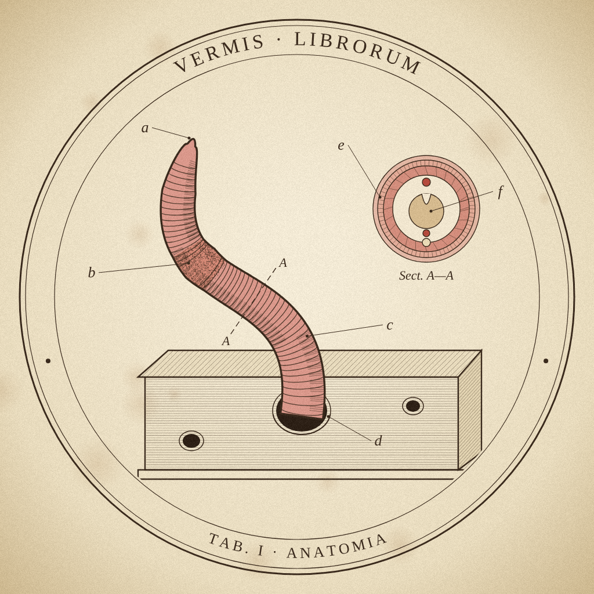

TAB. I · ANATOMIA
Vermis librorum
книжный червь
Читает книги по одному слову. Держите палец на экране — текст идёт, отпустите — пауза.
EPUB · FB2 · PDF · TXT

Читает книги по одному слову. Держите палец на экране — текст идёт, отпустите — пауза.
EPUB · FB2 · PDF · TXT